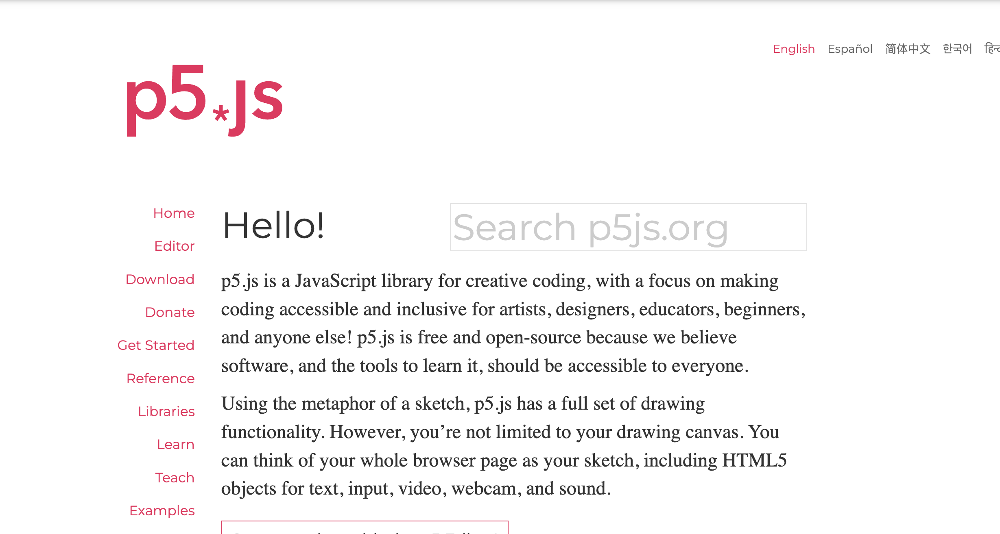
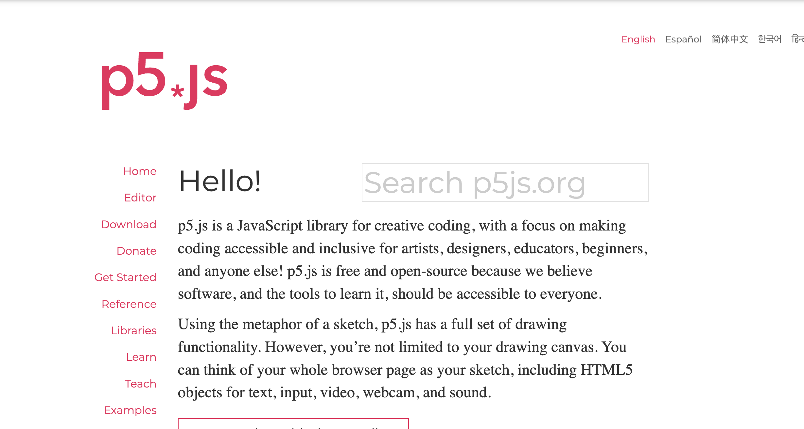

Introduction to Open Source Contribution
What is Open Source?
The concept of "open source" can be applied to many disciplines. For example, blueprints, hardware specifications, recipes, specific techniques, or rulesets can also be open source. Open sourcing these types of data makes information accessible and transparent, so anyone can have a hand in altering it for the better.
For this session, we will use the term "open source" in the context of software projects.
What is Open Source Software?
 

Open Source Software is software whose code is available to: view, modify, and distribute.
The software is usually created and maintained by a community of software developers, users, or anybody who wishes to contribute. Anyone with an internet connection can view the code, suggest changes, or point out issues to fix on websites like Github.
Having a larger community with a variety of different skillsets and perspectives to develop and maintain the software improves its stability, quality, and longevity.
What is NOT Open Source Software?
Open Source Software is NOT proprietary code, which is code that only a few people can view and modify.
It is also NOT shareware, public domain software, freeware, or software that viewers and readers made freely available without access to the source code.
Why Would I Want to Get Involved?
Be involved with a community.
Improve coding and communication skills.
Work towards a software-specific Job or Career.
Contribute to creating software that can be more representative of you!